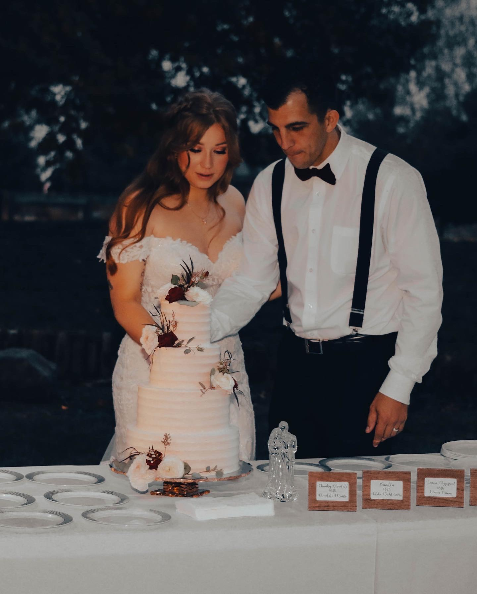
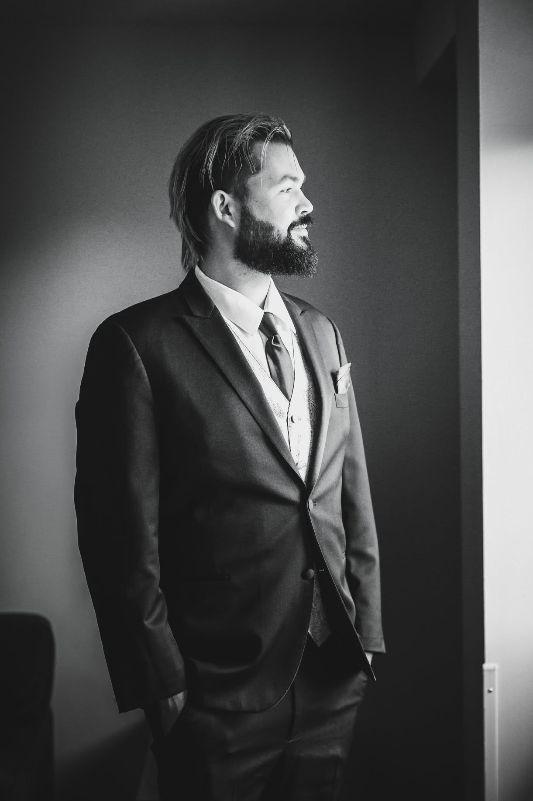
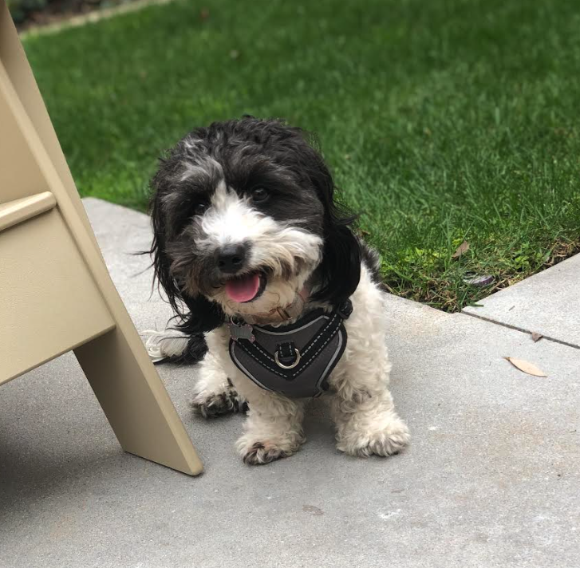

Real hospitality experience. Real results.

Chris Anderson founded Anderson Hospitality Solutions after spending two years in the trenches of hotel management, overseeing operations across five properties. That hands-on experience gave him an up-close look at one of the industry's most persistent problems: independent hotels struggling to keep rooms filled without burning through their operating budgets on marketing that doesn't deliver.
Frustrated by the gap between what big-chain hotels could afford and what independent operators actually had access to, Chris set out to build a consulting practice that brought the same strategic rigor — without the enterprise price tag. His approach is grounded in the belief that smart, consistent occupancy strategy shouldn't be a luxury reserved for large brands.
Outside of work, Chris is a dedicated father of two who understands the value of reliability and follow-through. That same mindset shapes how he partners with every client — showing up, doing the work, and staying accountable to the outcomes that matter most to your property.
Work With Chris
Will Long brings 15 years of technology experience to Anderson Hospitality Solutions, applying a rigorous, algorithmic approach to the challenges that hotel operators face every day. Working across five properties, Will focuses on identifying the processes that can be systematized, automated, and optimized — freeing up staff to focus on guest experience while ensuring nothing falls through the cracks.
His methodology goes beyond off-the-shelf software. Will designs workflow automation tailored to each property's unique operation, using data-driven systems to surface insights, reduce manual overhead, and create consistency at scale. The result is a hospitality operation that doesn't just run smoothly — it runs verifiably, with clear benchmarks and measurable performance at every step.
Will's conviction is simple: technology should prove its value, not just promise it. Every system he implements is built to demonstrate best-in-class service outcomes — not in theory, but in the numbers that matter to owners and operators.
Work With Will
Every great team has a secret weapon. Ours has four legs. Lola serves as Chief Morale Officer, head of sales support, and the genuine heart behind Anderson Hospitality Solutions. She brings warmth to every meeting, enthusiasm to every day, and a reminder that the best hospitality — in hotels or anywhere else — starts with making people feel welcome.
She does not respond to emails, but she approves of all of them.
Direct, hands-on operational oversight across multiple properties.
Deep experience navigating real occupancy and revenue challenges.
Helping independent hotels fill vacancies cheaply and consistently.